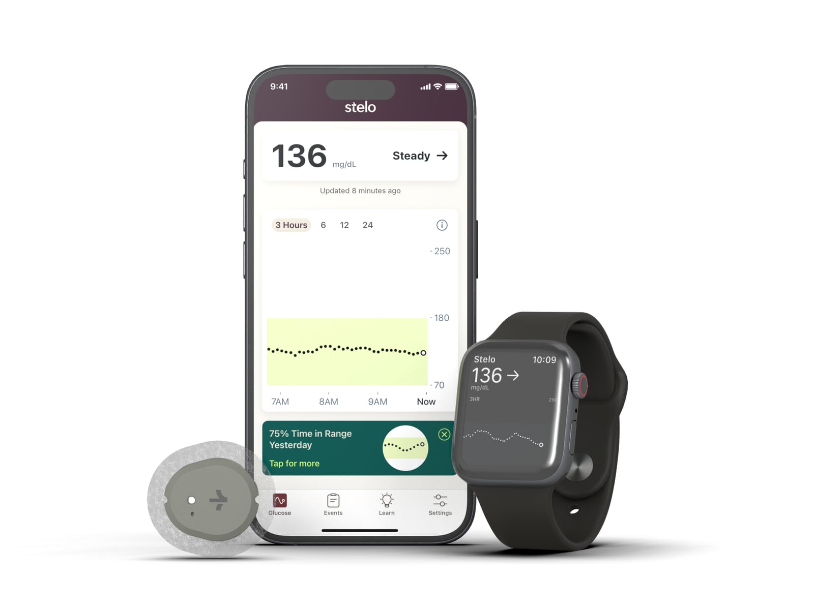

If you or a loved one manages diabetes, you've probably heard about continuous glucose monitors — or CGMs. They've changed daily diabetes care by replacing guesswork with real-time information. Here's a plain-language look at what they are, how they work, and how to get one.
What is a CGM?
A continuous glucose monitor is a small wearable device that tracks your glucose (blood sugar) levels around the clock. A tiny sensor sits just under the skin — usually on the arm or abdomen — and measures glucose every few minutes, sending readings to a smartphone, reader, or smartwatch.
How a CGM works
Instead of a single number from a fingerstick, a CGM shows your glucose trend — whether it's steady, rising, or falling, and how fast. Many systems can alert you when you're heading too high or too low, which helps you act sooner. Caregivers and your care team can often see the data too, making it easier to spot patterns and adjust your plan.
The benefits
- Fewer fingersticks for many users in everyday decisions.
- Real-time alerts for highs and lows.
- Trends over time that reveal how food, activity, and medication affect you.
- Peace of mind for you and the people who help care for you.
Popular CGM systems
Two widely used options are the Dexcom family and the Abbott FreeStyle Libre family. They differ in how readings are displayed, sensor wear time, and features. Not sure which fits your routine? Our companion guide, Dexcom vs. FreeStyle Libre, breaks it down.
What to expect when you start
Applying a sensor is quick and designed to be nearly painless. After a short warm-up, readings begin streaming to your device. Sensors are replaced on a set schedule, and we'll send reorder reminders so you never run out.
Frequently asked questions
Does a CGM replace fingersticks?
Many systems let you make day-to-day decisions without routine fingersticks, but always follow your device's instructions and your doctor's guidance.
How long does a sensor last?
It depends on the system, but most wearable sensors are replaced every several days to a couple of weeks.
Is a CGM covered by insurance?
CGMs are often covered for people managing diabetes who meet their plan's criteria, when prescribed. We'll verify your specific coverage at no cost.